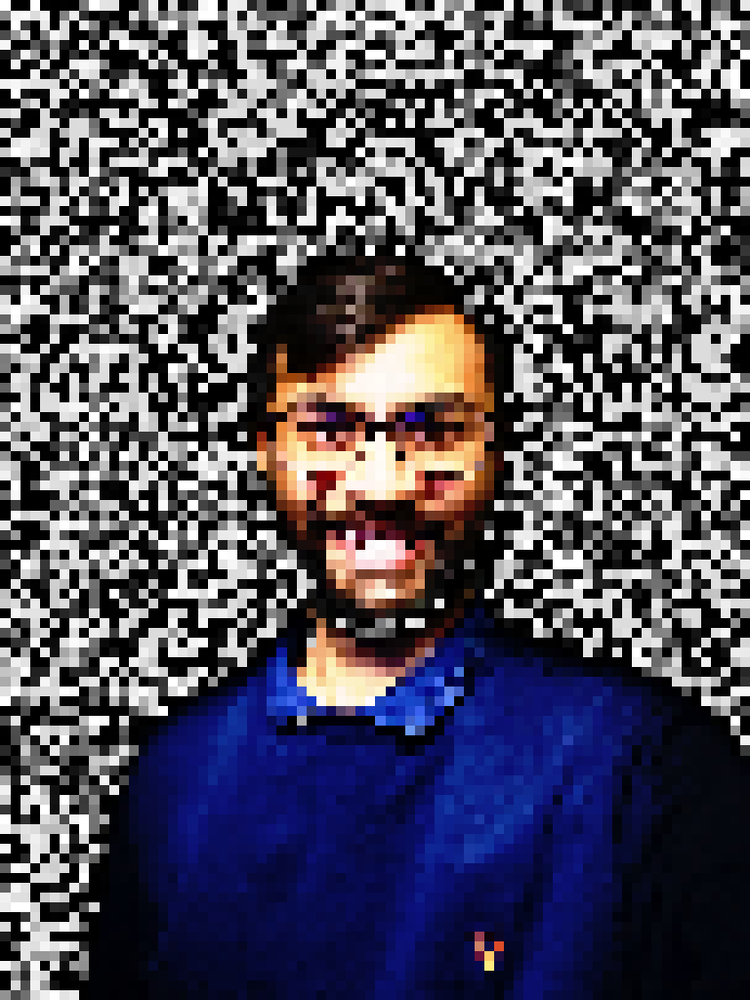

|
I am a second year Ph.D. student at Indian Insitute of Science, Bangalore and associated with Video Analytics Lab , where I work on generate computer vision algorithms. I have worked on semantic image editing using StyleGANs, video manipulation and interesting variations of NeRFs Email / CV / Google Scholar / Linkedin / Github |
 |
{kind=link}
|
Here I present some of my recent research works. Feel free to contact me, if you want to discuss more about of any of these works. |
 
|
Rishubh Parihar Ankit Dhiman Tejan Karmali R. Venkatesh Babu ACMMM, 2022 project page / arXiv In this work we proposed a Few-shot Latent based Attribute Manipulation and Editing (FLAME) method, a simple yet effective framework to perform highly controlled image editing by latent space manipulation. FLAME can generate highly realistic attribute edits and enables us to generate diverse attribute styles such as hair-styles, trained with only a few set of image pairs. |
 
|
Tejan Karmali Rishubh Parihar Susmit Agrawal Harsh Rangwani Varun Jampani Manish Singh R. Venkatesh Babu ECCV, 2022 project page / arXiv Proposed a hierarchical regularizer during the training of StyleGAN models to induce smoothness properties in the W/W+ latent spaces. The regularizer is implemented by guiding the intermediate features of the StyleGAN with the features from the pretrained feature extractors. |

|
Lin Yen-Chen, Pete Florence, Jonathan T. Barron, Tsung-Yi Lin, Alberto Rodriguez, Phillip Isola ICRA, 2022 project page / arXiv / video / code / colab NeRF works better than RGB-D cameras or multi-view stereo when learning object descriptors. |

|
Dor Verbin, Peter Hedman, Ben Mildenhall, Todd Zickler, Jonathan T. Barron, Pratul Srinivasan CVPR, 2022 (Oral Presentation, Best Student Paper Honorable Mention) project page / arXiv / video Explicitly modeling reflections in NeRF produces realistic shiny surfaces and accurate surface normals, and lets you edit materials. |